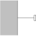
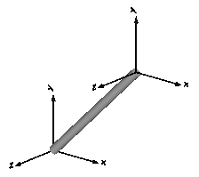

FixedFrame fixed in the world frame at a given position |

|
Information
This information is part of the Modelica Standard Library maintained by the Modelica Association.
Element consisting of a frame (frame_b) that is fixed in the world frame at a given position defined by parameter vector r (vector from origin of world frame to frame_b, resolved in the world frame).
By default, this component is visualized by a cylinder connecting the world frame and frame_b of this components, as shown in the figure below. Note, that the visualized world frame on the left side and Fixed.frame_b on the right side are not part of the component animation and that the animation may be switched off via parameter animation = false.

Parameters (10)
| animation |
Value: true Type: Boolean Description: = true, if animation shall be enabled |
|---|---|
| r |
Value: {0, 0, 0} Type: Position[3] (m) Description: Position vector from world frame to frame_b, resolved in world frame |
| shapeType |
Value: "cylinder" Type: ShapeType Description: Type of shape |
| r_shape |
Value: {0, 0, 0} Type: Position[3] (m) Description: Vector from world frame to shape origin, resolved in world frame |
| lengthDirection |
Value: to_unit1(r - r_shape) Type: Axis Description: Vector in length direction of shape, resolved in world frame |
| widthDirection |
Value: {0, 1, 0} Type: Axis Description: Vector in width direction of shape, resolved in world frame |
| length |
Value: Modelica.Math.Vectors.length(r - r_shape) Type: Length (m) Description: Length of shape |
| width |
Value: length / world.defaultWidthFraction Type: Distance (m) Description: Width of shape |
| height |
Value: width Type: Distance (m) Description: Height of shape |
| extra |
Value: 0.0 Type: ShapeExtra Description: Additional parameter for cone, pipe etc. (see docu of Visualizers.Advanced.Shape) |
Inputs (2)
| color |
Default Value: Modelica.Mechanics.MultiBody.Types.Defaults.RodColor Type: Color Description: Color of shape |
|---|---|
| specularCoefficient |
Default Value: world.defaultSpecularCoefficient Type: SpecularCoefficient Description: Reflection of ambient light (= 0: light is completely absorbed) |
Connectors (1)
| frame_b |
Type: Frame_b Description: Coordinate system fixed in the world frame |
|---|
Components (2)
Used in Examples (6)
|
Modelica.Mechanics.MultiBody.Examples.Elementary Demonstrate usage of ForceAndTorque element |
|
|
Modelica.Mechanics.MultiBody.Examples.Elementary Determine spring constant such that system is in steady state at given position |
|
|
Modelica.Mechanics.MultiBody.Examples.Rotational3DEffects Demonstrates that a cylindrical body can be replaced by Rotor1D model |
|
|
Modelica.Mechanics.MultiBody.Examples.Rotational3DEffects Demonstrates usage of models Rotor1D and Mounting1D |
|
|
Modelica.Mechanics.MultiBody.Examples.Rotational3DEffects Demonstrates usage of model Rotor1D mounted on a moving body |
|
|
Modelica.Mechanics.MultiBody.Examples.Rotational3DEffects Demonstrate usage of GearConstraint model |
Used in Components (2)
|
Modelica.Mechanics.MultiBody.Joints Joint (no mass, no inertia) that describes an ideal rolling wheel set (two ideal rolling wheels connected together by an axis) |
|
|
Modelica.Mechanics.MultiBody.Visualizers Visualizing the ground (box in z=0) |